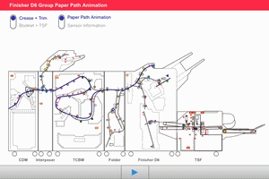

10.1.1 如何使用动画（仅限Edoc） 
说明了动画的使用方法.

建议在PC上使用动画. 在平板电脑上播放动画时, 可能因操作系统版本不同而无法正常工作, 通信环境, 和 设备类型.
D6_PaperPath_动画 是纸张传输操作的2D动画 of 装订器 D6系列.
折痕 + 裁切
选择 折痕 + 裁切 at ...的顶部 screen, 选择 "纸路动画", 和 按下 启动 button to 启动 一系列 operations.
当...时 "传感器 信息" is 已选择 和 the 启动 button is pressed, 纸张 停在 每个 传感器, 和 the corresponding 传感器 名称 已显示 at ...的顶部 screen.
小册子 + TSF
选择 小册子 + TSF at ...的顶部 screen, 选择 "纸路动画", 和 按下 启动 button to 启动 一系列 operations.
当...时 "传感器 信息" is 已选择 和 the 启动 button is pressed, 纸张 停在 每个 传感器, 和 the corresponding 传感器 名称 已显示 at ...的顶部 screen.
 D6_PaperPath_动画 |